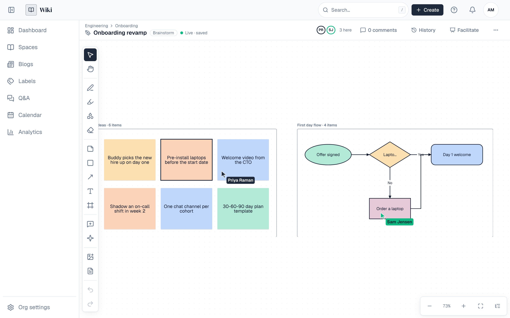
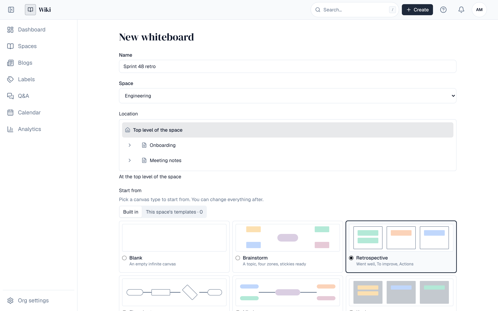
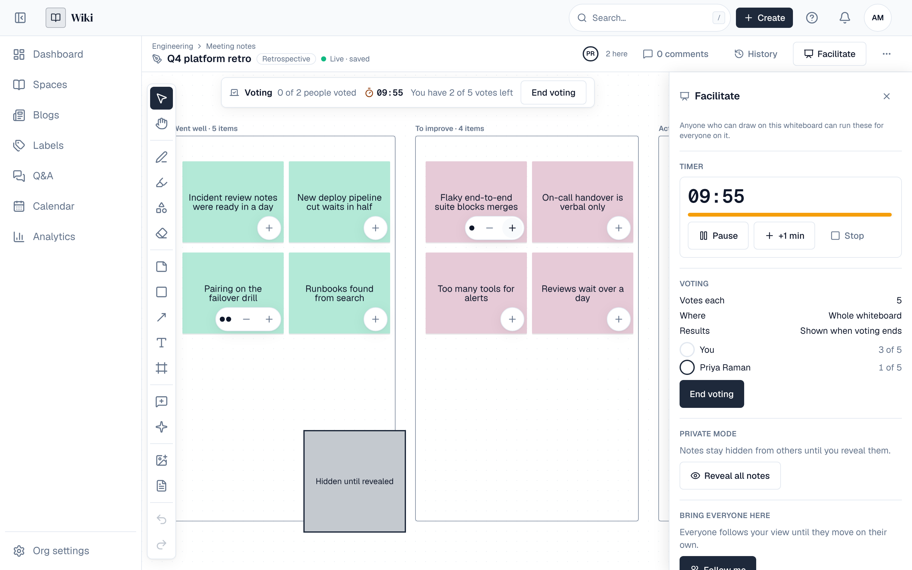
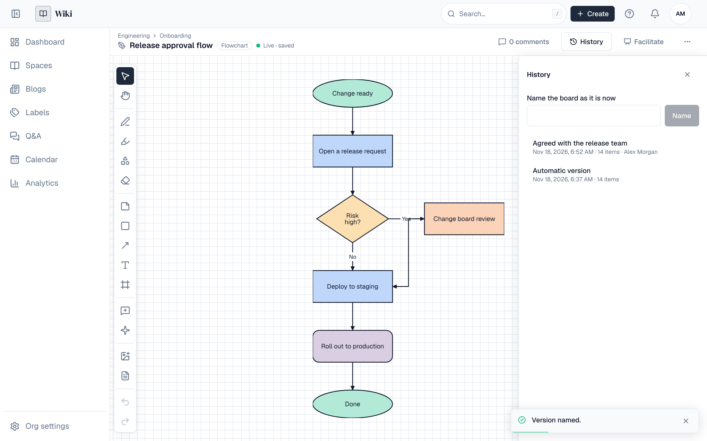
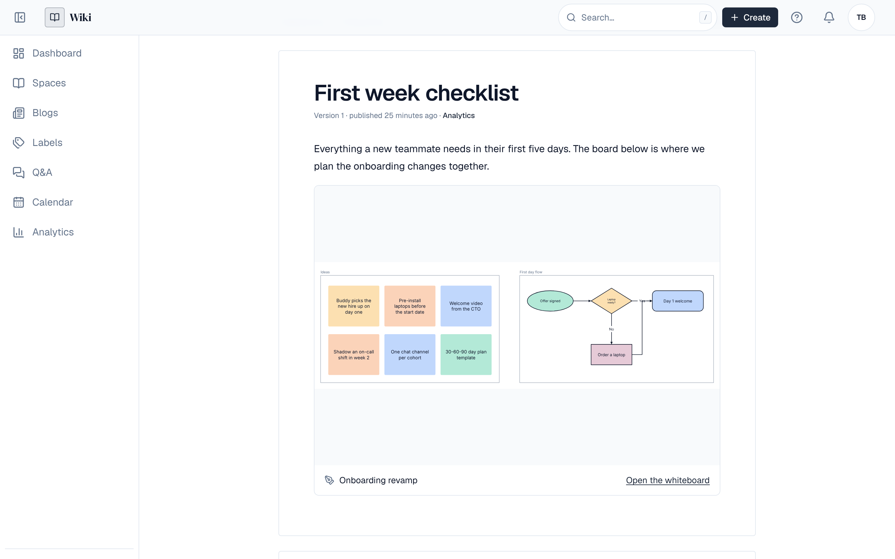
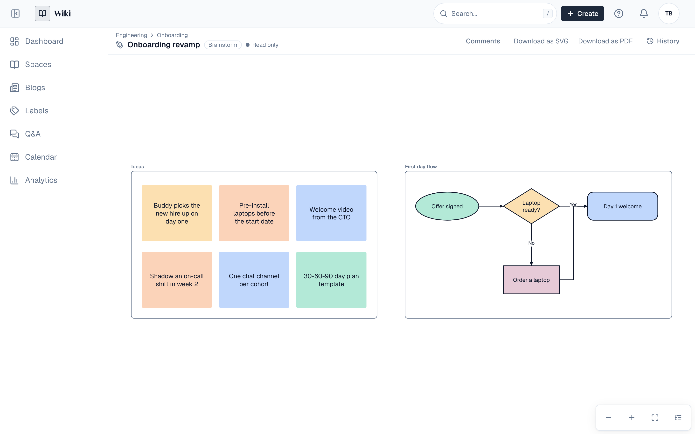
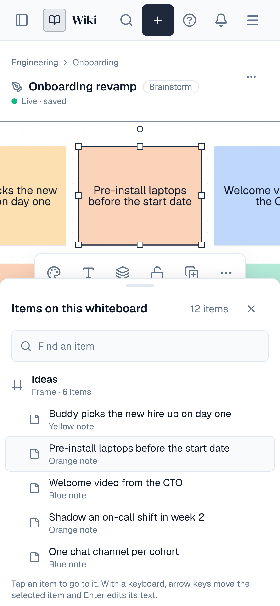

1. Overview
A whiteboard is a live canvas in a space where people draw, write sticky notes, sketch flows and plan together, each seeing the others' cursors and changes as they happen. It sits in the space's page tree like a page, has its own history of versions, and can be shown inside a page with the whiteboard block.

Whiteboards need an Enterprise licence (Licensing). Without one, the Create menu and the space don't offer them, and opening one says what it needs. Whiteboards made while the licence covered them stay in the page tree.
2. Making a whiteboard
People who edit a space make whiteboards. Choose Create → Whiteboard in the header, or New whiteboard on a space's overview, then:
- Give it a Name and pick the Space, and under Location where it goes: the top level of the space or under a published page. Nothing goes under a whiteboard.
- Under Start from, pick a canvas type, or one of This space's templates.
- Optionally pick the Background (dots, grid or plain) and the Canvas size (endless, a 16:9 slide or A4). A slide or A4 board shows the page's edges, and Zoom to fit fits them.
- Tick Hide notes until revealed when people should write without seeing each other's notes first (a retrospective, a silent brainstorm). See Private mode.
- Choose Create whiteboard. It is live at once: there is no draft and nothing to publish.

| Canvas type | Starts with |
|---|---|
| Blank | An empty canvas |
| Brainstorm | A topic in the middle and four zones (ideas, questions, risks, next steps) with notes ready |
| Retrospective | Three frames: Went well, To improve, Actions |
| Flowchart | A grid with snapping on, start and end shapes, a step, a decision and elbow arrows |
| Mind map | One idea in the middle with branches on both sides; Enter and Tab add nodes (see Mind maps) |
| Kanban | To do, Doing and Done columns with a card |
The board's starting text is in the language of the person who made it. Everything on it can be changed after.
3. Tools
The toolbar is on the left (at the bottom on a phone). Each tool has a key, shown in its tooltip:
| Tool | Key | What it does |
|---|---|---|
| Select | V | Select, move, resize and turn items; drag on empty canvas to select several |
| Hand | H, or hold Space | Move around the board |
| Pen and Highlighter | P, M | Draw freehand in a colour and width; the highlighter is see-through |
| Smart shape | S | Draw a rough circle, box, triangle, diamond, line or arrow and it becomes a clean one; hold Shift to keep your ink, or choose Keep my ink after |
| Eraser | E | Removes whole ink strokes it touches |
| Sticky note | N | Eight colours and three sizes; text shrinks to fit. Show my name on new notes tags notes with your name |
| Shape | R | Rectangle, rounded rectangle, ellipse, diamond, triangle, parallelogram, cylinder, speech bubble and star, each with text |
| Connector | L | A straight, elbow or curved line with arrows, attached to the items it joins: it follows them when they move |
| Text | T | Free text on the board |
| Frame | F | A named area that groups what is in it; moving the frame moves its items |
| Comment | C | Pin a comment to a place or an item (see Comments) |
| Laser pointer | K | A trail everyone sees for a second, to point at something; nothing is kept |
| Image and Page link | Add an image (PNG, JPEG, GIF or WebP; or drop images on the board) or a card linking a page of the space |
Select items to get the bar above them: colour, fill and border, text size and alignment, line style and arrows, order (front, back), Lock, Duplicate, and under More: group, align, distribute, copy and delete. Copy and paste work between whiteboards. Undo and redo take back only your own changes, never someone else's.
The ⋯ menu holds Canvas (background, size and snap to grid, for everyone), Save as template, Duplicate and the downloads.
4. Working together
- Everyone on the board sees each other's cursors with their names and what they are doing (drawing, typing, moving), their selections, and strokes and moves as they happen. The faces in the header show who is here.
- Click someone's face to follow them: your view moves with theirs until you move on your own.
- Changes are saved as you make them (Live · saved). If the connection drops, keep the tab open: your changes go out when it is back. After two minutes offline the board turns read-only until it reconnects, and nothing you changed is lost.
- Up to 50 people can be on one whiteboard at a time on each server.
5. Facilitation
Facilitate in the header (in the ⋯ menu on a phone) opens tools to run a session for everyone on the board. Anyone who can draw on the whiteboard can use them; what they start, everyone sees in the bar at the top of the board.

6. Timer
Pick 1, 3, 5, 10 or 15 minutes. Everyone sees the same time left, whatever their computer's clock says. Pause, Resume, +1 min and Stop work for everyone. When it runs out, the bar says Time's up (screen readers announce it).
7. Voting
- Choose how many Votes each person has (up to 20) and, under Where, the frames to vote in, or none for the whole whiteboard.
- Choose Start voting. Each note and shape gets a + button; each click is a vote, and − takes one back. The bar shows how many votes you have left and how many people voted. The panel lists who has voted.
- Choose End voting. Every note shows its count, and the panel ranks the results: choose one to go to it. Clear the results removes them.
Results stay hidden until voting ends, so nobody follows the crowd.
8. Private mode
Hide notes until revealed hides the notes other people add from then on: each person sees their own notes, and everyone else's as gray Hidden until revealed placeholders, until someone chooses Reveal all notes. The panel shows how many people are still writing. Notes that were on the board before stay visible, and hidden notes take no votes until they are revealed.
A board made with Hide notes until revealed starts in private mode, with its starting notes visible. Hidden notes are also hidden in the read-only view, thumbnails, downloads and search.
Private mode is for focus, not secrecy: a hidden note's text reaches the browsers of everyone who can draw on the board.
9. Bring everyone here
Follow me makes everyone on the board follow your view, so they see what you show. Each person stops following when they move on their own; Stop leading ends it for all.
10. Mind maps
On a mind map, select a node and press Enter to add a sibling or Tab to add a child, joined by a line. The map lays itself out: children on the side their branch is on, without overlaps, the centre where it was. Each addition is one undo step.
11. Comments
People who may comment pin a comment with the Comment tool (C) to a place or an item; a pin on an item moves with it. Comments in the header lists the board's threads; Show on the whiteboard goes to one. Readers who may comment pin comments on the read-only view too. See Comments.
12. Versions and history
History in the header opens the versions on the side of the board. The board keeps a version on its own each time people stop changing it for a while (kept 30 days), and you can Name the board as it is now or name an automatic version; named versions are kept until deleted. Choose a version to see it, then Restore this version to put its items back as a new change everyone sees, or download it.

Download as SVG or Download as PDF saves the board, a version or a frame.
13. Templates and copies
Save as template (⋯ menu, space admins) makes a whiteboard template of the space: new whiteboards can start from it under This space's templates. Duplicate makes a copy beside the board, with its images. Images aren't part of a template.
14. The whiteboard block
Show a whiteboard inside a page: in the editor, type /whiteboard, pick a whiteboard of the space and its height, and optionally a frame. Readers see the board's latest picture and Open the whiteboard. A reader who may not see the board, or a board that was deleted, shows nothing.

15. Read-only view
Viewers and guests see a read-only view: the board as last saved, with pan, zoom, the items list, comments (for those who may comment), history and downloads. It refreshes every 30 seconds while open. Visitors of a public space who aren't signed in see the board, its picture and its comments, but not its history or downloads; signing in shows those.

16. The items list and keyboard
The list button in the zoom bar opens Items on this whiteboard: everything on the board in reading order, frame by frame and row by row, with what each item is, who made a note and where its arrows go. Find an item searches it. Choose an item to go to it. With a keyboard, the arrow keys move from item to item and select it on the board, and Enter writes in it.
| Key | Does |
|---|---|
| V H P M S E N R L T F C K | Pick a tool (see Tools) |
| Space (held) | Hand, while held |
| Arrows (Shift for further) | Move the selected items |
| Enter or F2 | Write in the selected item |
| Delete | Delete the selected items |
| Ctrl+Z, Ctrl+Shift+Z | Undo and redo your own changes |
| Ctrl+A, Ctrl+C, Ctrl+V, Ctrl+D | Select all, copy, paste, duplicate |
| Ctrl+G (Shift to ungroup), Ctrl+Shift+L | Group, lock |
| ] and [ (Ctrl for front or back) | Stacking order |
| Enter, Tab on a mind map | Add a sibling, a child |
Screen readers announce when someone else changes or removes the item you have selected. On a Mac, use Cmd instead of Ctrl.
17. On a phone
On a phone the toolbar keeps Select, Hand, Pen, Sticky note, Shape, Text and undo at the bottom, and the header's comments, history and facilitation move into the ⋯ menu. Pinch to zoom and drag with two fingers to move around; view, pan, add and edit notes and draw with your finger. The items list opens as a sheet from the bottom, and the item you pick shows above it.


18. Who can do what
| You are | View | Comment | Draw and facilitate | Make, save as template, delete |
|---|---|---|---|---|
| Viewer (and guests) | Read-only view, history and downloads | No | No | No |
| Public visitor, not signed in | Read-only view, without history or downloads | No | No | No |
| Commenter | Read-only view | Yes | No | No |
| Editor | Live | Yes | Yes | Make and delete; templates need a space admin |
| Admin | Live | Yes | Yes | Yes |
19. Limits
| What | Limit |
|---|---|
| Items on a whiteboard | 20,000 |
| Images on a whiteboard | 500 |
| Text in one item | 2,000 characters |
| People on a whiteboard at once | 50 on each server, 3 connections each |
| Automatic versions | Kept 30 days, at most 200 per board; named versions are kept |
| Votes each in a round | 20 |
| A timer | Up to 4 hours |
A whiteboard that reaches its item or image limit, or grows too large to read, stops taking changes and says why. It keeps showing the board as it was last read. An editor can reset it from History: to one of its versions, or with Reset the board to how it was last shown when there is none to pick. A board that can still be read is kept as a version first. Notes hidden by private mode come back blank after a reset to how the board was last shown.
A whiteboard too complex to download (thousands of large shapes or long texts) answers This whiteboard is too complex to export: download one of its frames instead. Its picture in pages and lists is still drawn, as far as it goes. Drawing pictures on request is limited per person (about 30 a minute) and per server, so a very busy server may ask you to try again in a moment.
Creating a whiteboard raises page.create with kind board; changes raise board.update once people stop for a while, and versions raise board.version.create, board.version.restore and board.version.delete (board.reset when a stopped board is reset). The board's watchers are told about changes. Timers, voting and private mode raise no events. See Events.